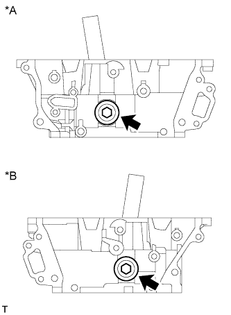
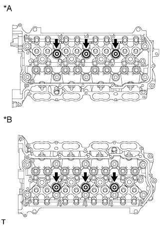
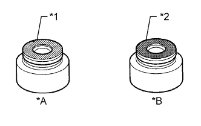
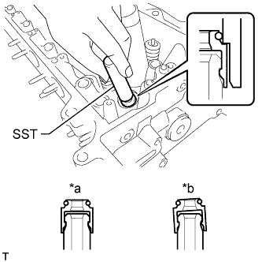
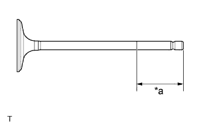
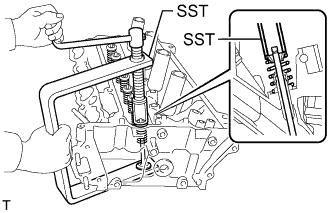
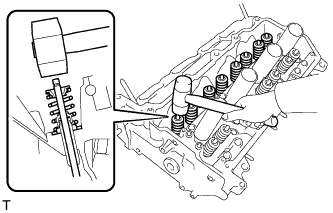
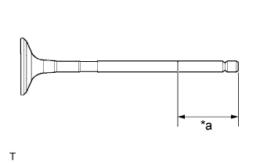
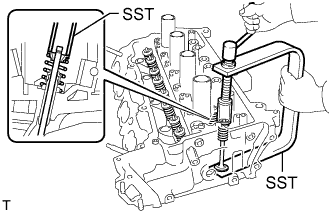
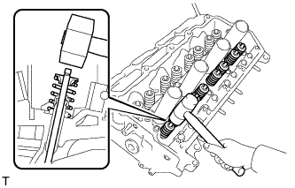

CYLINDER HEAD > REASSEMBLY |
| 1. INSTALL STUD BOLT |
Using E7 and E8 "TORX" socket wrenches, install the stud bolts.
| *A | for Intake Side of Bank 2 | *B | for Intake Side of Bank 1 |
| *C | for Exhaust Side of Bank 2 | *D | for Exhaust Side of Bank 1 |
| *E | for Front Side of Bank 2 | *F | for Front Side of Bank 1 |
| 2. INSTALL NO. 2 STRAIGHT SCREW PLUG |
|  |
Using a 14 mm hexagon wrench, install 2 new gaskets and the 2 No. 2 straight screw plugs.
| *A | for Bank 2 |
| *B | for Bank 1 |
| 3. INSTALL NO. 1 STRAIGHT SCREW PLUG |
|  |
Using a 10 mm hexagon wrench, install 6 new gaskets and the 6 No. 1 straight screw plugs.
| *A | for Bank 2 |
| *B | for Bank 1 |
| 4. INSTALL VALVE SPRING SEAT |
Install the valve spring seats to the cylinder head.
| 5. INSTALL VALVE STEM OIL SEAL |
|  |
Apply a light coat of engine oil to new valve stem oil seals.
| *A | for Intake Side |
| *B | for Exhaust Side |
| *1 | Brown |
| *2 | Gray |
|  |
Using SST, push in the valve stem oil seals.
| *a | CORRECT |
| *b | INCORRECT |
| 6. INSTALL INTAKE VALVE |
|  |
Apply a sufficient coat of engine oil to the tip area of the intake valve shown in the illustration.
| *a | 40 mm (1.57 in.) or more |
Install the intake valve, compression spring and valve spring retainer to the cylinder head.
|  |
Using SST, compress the compression spring and install the 2 valve spring retainer locks.
|  |
Using a plastic-faced hammer, lightly tap the valve stem tip to ensure a proper fit.
| 7. INSTALL EXHAUST VALVE |
|  |
Apply a sufficient coat of engine oil to the tip area of the exhaust valve shown in the illustration.
| *a | 40 mm (1.57 in.) or more |
Install the exhaust valve, compression spring and valve spring retainer to the cylinder head.
|  |
Using SST, compress the compression spring and install the 2 valve spring retainer locks.
|  |
Using a plastic-faced hammer, lightly tap the valve stem tip to ensure a proper fit.